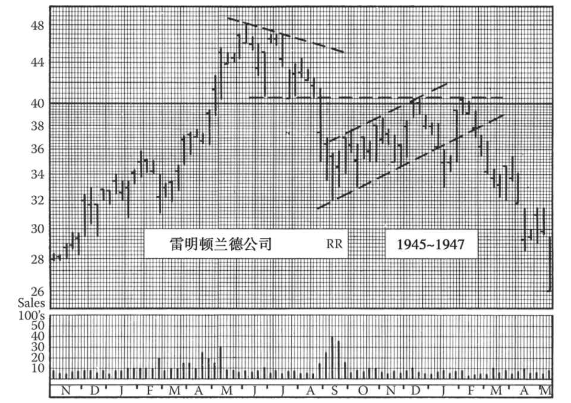
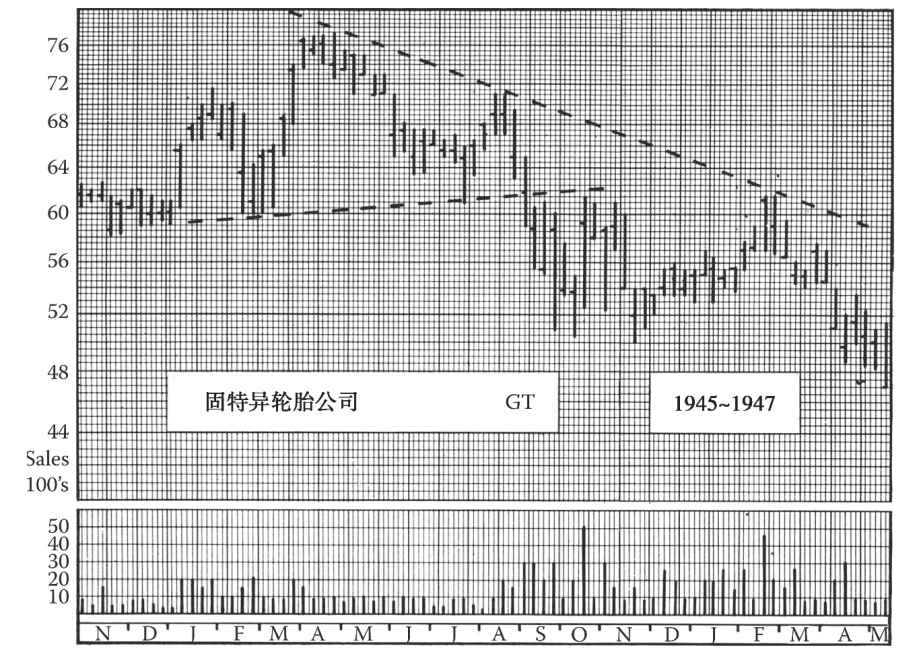

第13章 支撑和阻力
本章将学习的现象与前述章节大为不同，可以从图13-1～图13-12看出。现在将从一个全新的视角来看股票市场。通过这章的学习，我们会发现一些非常实用的规则，可以辅助我们估测趋势的目标位、预测离场的时间，从而帮助我们进行选股选时。实际上，有些交易老手完全不在意前述章节所讲的价格和成交量的图形，仅凭对支撑和阻力的研究就形成了自己的投资之道。
但是支撑和阻力与前述章节中的各种形态不无关系。在缺口这一章中对支撑和阻力的基本原理已有提及，随着阅读的深入，你会发现对一些其他价格图形的理解豁然开朗，或至少更加容易。
“支撑”这个术语在金融圈被普遍使用，读者一定不陌生。比如说，我们可能听到某只代码为XYZ的股票在50美元处有强大的支撑，或者某只股票一旦下跌5美元就会遇到强劲支撑。本章我们把支撑 定义为买盘，包括实际的买盘和潜在的买盘，只要成交量足够令股价跌势停滞相当一段时间。阻力 则是支撑的相反概念。阻力就是卖盘，包括实际的卖盘和潜在的卖盘，只要成交量足够令股价涨势停滞相当一段时间。根据以上定义，支撑和阻力与需求和供应的含义相近，但又不完全一样。
支撑位 是一个价格水平，股价一旦触及这个水平就会遇到很多买盘，这些买盘至少能在短期内令股价止跌企稳，甚至转跌为涨。同样地，阻力位 也是一个价格水平，股价一旦触及这个水平就会遭遇很多卖盘，这些卖盘至少能在短期内令股价停滞不前，甚至掉头向下。理论上说，任何一个价格水平都会有一定的买盘和卖盘。（而买卖盘之间的较量决定了市场走势。）但是，支撑区代表着买盘集中 的区域，阻力区代表着卖盘集中 的区域。
根据上述定义你可以看出，水平震荡形态（如箱体）的上界线就是阻力位，下界线则是支撑位；上升三角形的上界线无疑是阻力位，依此类推。但现在我们更有兴趣的是为什么可以预测支撑和阻力会出现在一定的价格水平。在合理的范围内（当然也有少数例外情况，后文将讨论），是完全可以预测阻力位和支撑位的。读图专家常常能异常准确地预测股价的上攻何时会遭遇阻力（卖盘）以及跌势中何时会获得支撑（买盘）。
预测阻力和支撑的根据是，股票在某些特定价位会频繁、密集地换手。如果某只股票在某个价位出现了巨额交易，这个价位往往是一个趋势（长线、中线或短线）反转点，股价每次走到该价位就会获得支撑或遭遇阻力。但是有趣的是，很多不常读图的投资者永远都不会理解：同一价格水平会在阻力位和支撑位之间相互变换。一个高点一旦被超越，就会变成下一次回调的支撑位；而一个低点一旦被穿透，则会变成下一次反弹的阻力位。
13.1 一般的趋势发展
我们可以通过一般的趋势发展来举例说明。假设在牛市中，一只股票从12美元涨至24美元，然后在24美元处遭遇大量抛盘。这些抛盘可能会引发一次中线回调，令股价回落至18美元，也可能引起一系列短线波动，从而走出一个整固形态，令股价在24～21美元的区间内震荡。在这次回调或整固之后，一段新的涨势开始形成，股价达到30美元，再次遭遇密集的抛盘，上攻受阻，再次回调。这次回调依然有可能是震荡整固或中线回调。如果是中线回调的话，那调整力度将如何？换言之，支撑位在哪里？答案是24美元，即前一个高点，也就是前期交投非常活跃的价位。这个价位就是支撑位，它会令股价止跌回升，至少会形成短线修复。
为什么会这样呢？让我们先来举一个跌势中的类似例子。假设一只股票已经冲高回落，从70美元的高点跌至了50美元，并在50美元处遇到抛售高峰，此后反弹，虽然可能再度下探50美元，但还是反弹至60美元。股价在60美元时买盘逐渐衰竭，趋势再次掉头，且加速向下运行，股价下探至42美元新低。此时，大量买盘出现，引发第二次反弹。我们可以有把握地预测这次从42美元开始的反弹将在50美元处遇到强大阻力。50美元这个价位在第一段跌势中是支撑位，在第二段跌势中被穿透，角色发生了反转，变成了第二段反弹的阻力位。
在此读者可能会再问为什么？现在让我们来揭晓答案吧。在上一段中所举的跌势例子中，股价首先跌至50美元，成交放大，然后趋势反转，股价反弹至60美元，但成交慢慢减少。50美元处交投活跃，每一个卖家都对应着一个买家。这些买家可能是在空头回补，除此之外，并无进一步的购买意愿。而短线客和专业投资者可能仅仅是因为感觉到这是一个短线低点而买入，希望在后续反弹中小赚一笔。这些人（或部分人）应该会在获利后快速了结。但大部分在50美元买入的人应该是因为觉得股价够便宜、跌得够多了。就在几个月前，这只股票还卖70多美元呢。因此，很多投资者认为50美元买入是捡了便宜，可以逢低吸纳，“长期持有”。
13.2 进一步解释
试想一下，你就是刚刚买入该股的投资者。你看见股价一路从50美元涨到60美元，觉得自己的预期得到了证实，于是继续持股待涨。然后，涨势突然停止，股价一路回落至52美元，最终下探至50美元。你稍微有些紧张，但还是相信应该继续持有，也许你在股价最终下探至50美元时有过短暂的犹豫，但很快股价就继续下跌。一开始，你还心存幻想，觉得此时的下跌可能只是震仓，股价很快就会反弹，但随着跌势延续，幻想破灭。现在你开始不安。当股价跌破45美元，你开始懊恼选错了股票。“也许我当时不应该买这只股票，但也不想割肉，等股价反弹到50美元就清仓，这样就回本了（不考虑交易费用）。至于这股票以后怎么走，我也不管了。”（是不是听上去似曾相识呢？）
图13-1 为什么琼斯-拉弗林钢铁公司的股价于1945年年中在33～34美元下方震荡了如此之久？从这张图上，我们看不出原因，但此前的月线图显示：1939年年末和1940年年末，这个价位是长期震荡区域的底部。这两个底部一开始是支撑位，5年后则变成了阻力位。但一旦股价冲破该阻力位，很快就上涨至44美元，之后股价再次回调至支撑位，也就是之前的33～34美元。综上所述，支撑位先变成了阻力位，之后再次转变为支撑位。
我们可以跳过接下来几波“符合规则”的走势，直接来看1946年的一波股价变化。在这波走势中，支撑位的规则被首次打破。股价在1946年2月的第一天就冲到了54美元，远超过1945年11月46美元的高点。2月末的回调本应止步于46美元的支撑位，但股价一路跌至40美元。这是一个不祥的预兆。之后，股价走出了一个巨大的对称三角形，9月向下突破。
熊市的第一轮恐慌性下跌不会止步于支撑位。尽管股价跌至33～34美元的前期支撑位时反弹了好几次，但琼斯-拉弗林钢铁公司的股价走势最终也不例外。11月，股价正好跌到了对称三角形的测算目标位。
请阅读本章的内容后，重温本图
现在，让我们来看一个和上文的例子相反的情形，即支撑位和阻力位在涨势中的变化。假设你和其他许多投资者都在12美元的价位买入了XYZ公司的股票，在股价涨到24美元时决定获利了结，落袋为安。之后股价回调至20美元，你庆幸自己及时离场了。但股价突然掉头上攻，涨至30美元，此时，你觉得自己之前的离场不那么明智，后悔没有继续持股。你当然不会在30美元这个价位买入，但如果股价继续跌至24美元，也就是你当初离场时的价位，你就会重新建仓。
也许你从来没有遇到过这两种情况，又或许你在这两种情况下的反应和我们描述的不一样。但如果你已经积累了一定的市场经验，对于普通投资者的心态有一些了解，你就知道这是投资者的典型心态。
上文解释了支撑位和阻力位的基本原则，也许你并不满足于这样的解释。但请记住，市场的供需平衡十分微妙。在任何价位上，供稍大于求就会扼杀涨势，供稍小于求就会遏止跌势。另外，其他投资者也在时刻关注股价走势。他们会迅速察觉趋势变化，并跟风买卖。因此，一个买卖几百股的指令也可能引发几千股的跟风。
另外我们要强调的是，虽然支撑位和阻力位的出现是因为有些投资者在该价位反复买卖股票，但这并不代表他们无知或缺乏经验。拿上面第一个例子来说，那些在50美元买入的投资者显然比在70美元的高点买入或在股价回落至50美元途中买入的人更聪明，尽管最终股价还是跌破了50美元。由于他们的判断比其他人更准确，我们可以推测在后续的股价走势中，他们会谨慎地研判行情，不会在股价恢复至某一价位时才离场。所以，熊市中的“上方套牢盘”，即高价买入等待解套的仓位，会在股价涨至阻力位之前就涌出。聪明的投资者会及时割肉以避免更大的损失。
同理，踏空的投资者在牛市中宁愿以更高的成本来补回过早获利了结的仓位。因此，牛市第二阶段的回调一般只会轻微触及支撑区的最高点，熊市的中线反弹则仅能勉强够到阻力区的最低点。我们在后文还会说到这一点，但首先我们必须了解两件事：一是怎样估算支撑和阻力的强弱，二是怎样准确定位支撑区和阻力区。
13.3 估算支撑/阻力强弱
回到最前面的原则，我们看到，股票在上涨过程中遇到阻力的位置取决于不同价位上的成交股数，即各个价位上先前买入后被套、现在一旦解套就可能抛出的股数。显然，成交量 是估算阻力强弱的首要标准。如果某只股票在一个短线底部只有400或500股换手，那么该股后来上攻到该价位时，不会遭遇太强的阻力；但是，如果某只股票在一个抛售高峰成交了几千股，那么该股后来下跌再反弹回到这个价位时，会遭遇大量卖盘。
长箱体或下降三角形的震荡有多个低点落在同一水平线上。我们可以通过将各个低点的成交量加总，大致估算卖盘数量，但估出来的数字需要打个折，因为有些人在前期低点买入后，不等形态完成就在高点卖出了。简而言之，单个、深幅、伴随着高成交量的低点，与一系列成交分布均衡、夹杂若干反弹的低点相比，意味着更强的阻力。
另一条标准是阻力位形成后的跌幅，跌幅越深，解套盘就越多，跌幅越浅，解套盘就越少。通常，这个幅度越大，阻力也就越大。假设PDQ从30美元跌到20美元，盘整数日后反弹到24美元，接着回落至19美元。在20美元买入该股的投资者此时不会太担心。如果该股现在从19美元反弹，那么在20美元价位几乎不会出现解套盘。如果该股继续跌到18美元后才反弹，那么在20美元价位会出现少量解套盘。而如果该股继续跌到17美元后才反弹，那么在20美元价位会涌出相当多的解套盘。简而言之，股票只有跌到远低于买入价的水平，才能使持有者确信自己投资失策、一有回本的机会就该出逃。
我们无法通过精确的法则或等式来判断多大的跌幅能形成多大的阻力。不过，对于中低价股（20～35美元），一般需要跌10%以上，才能使前期低点变成阻力位。这条“10%法则”并不适用于超低价股。你可能在5美元买入一只股票，看着它跌到4美元或3.5美元，你仍然很淡定，但其跌幅已达20%或30%。因为你的“金额”损失看上去不大，而且你预期该股将涨到6美元或7美元，所以你会继续持股待涨。
还有一个因素也支持上述“价格落差”标准。如果PDQ从20美元反弹到24美元，然后暴跌到12美元，那么不仅许多在20美元买入的投资者深受打击、急盼解套，还有在12美元买入的投资者很乐意在20美元卖出（赚取2/3的利润）。相比之下，在18美元买入的投资者就不太愿意在20美元卖出。
估算前期低点阻力强弱的第三条标准是自该低点形成以来的时间长度，以及这段时期内的大盘走势。一般来说，如果熊市早期阶段形成了一个中线底部，此后股价深幅下跌，穿透该底部，接着花大半年时间构筑了一个长线底部，然后在四五年的时间里逐步回升到该中线底部，那么该中线底部区域的阻力不会很大。与四五年前的低点相比，一两年前的低点可能会出现更强的阻力，但前者并非已完全失效。事实上，有些股票在反弹时遇到时间久远、久未触及的前期低点时仍会遇到极强的阻力，这些股票在前期漫长的跌势中并没有进行股票拆分或分红，没有模糊投资者记忆中的持仓成本，当股票反弹至这些投资者的成本价时，他们有极强的解套意愿，因此形成极强的阻力位。
然而，如果某个阻力区域已经被上攻过一次（即股价向上攻破该价位后再次回落），那么该区域的阻力显然已经消耗掉一些。部分上方套牢盘已经在股价的第一次上攻过程中保本出逃。因此当股价第二次上攻到这个阻力区域时，遇到的抛压会轻于第一次。此时又该观察成交量，以测算阻力的消耗程度。一般说来，当股价第三次上攻阻力位时，成功的概率较大。
我们已经列出了估算阻力强弱的三条标准：成交量、价格落差、阻力位形成距今的时间。现在读者想必已经明白，这三条标准的运用离不开自己的主观判断，不可能有精确的数学公式。

图13-2 这张周线图展示了一段中线升势的阻力/支撑位。本章所述原则很容易用在这张图上。请注意股价于1945年跌穿了一条长趋势线，然后在前一年11月高点处获得支撑止跌
但是不管怎样，这个问题并不是太复杂。基本原则很简单，也很容易理解。我们可以在图上寻找最近一波跌势中的短线低点，它对当前的涨势意味着或多或少的阻力。我们必须估算该低点的潜在抛盘，即该价位的持仓有多少股。
图13-3 在研究长线阻力/支撑位时，月线图最有用。这张月线图上有多个值得关注的点位。请观察重要阻力/支撑位的形成、再现以及相互转化。图上展现的是1947年的股价，已体现了1933年和1946年的股票拆分
在运用主观判断来估算这些因素时，最危险的是低估阻力，而高估总是更安全的。你也许有看多的倾向；你也许会说：“那些被套的人一定会认识到情况已经发生变化，所以不会急于解套。”请不要这样。记住，他们已经被套了很久，就算他们看好大市，也可能已经对这只股票失去信心，希望调仓换股。（一般的美国投资者常常顽固地拒绝割肉，因此丧失许多换股机会。）
以上内容同样适用于估算潜在支撑力，只不过方向相反。原则完全一样，但其逻辑可能不那么容易掌握。

图13-4 这张月线图上，1939年、1940年、1941年、1944年的阻力位（26美元处）以及1936年为期3个月的震荡特别值得关注。此外，1936～1937年该股放量见顶，该顶部的低点（28美元）在8年后的1945年呈现出较强阻力，股价攻克该阻力位后飙升。这张图上还能多画几条阻力/支撑线。请注意该股1937～1938年和1942年的长线底部形态
13.4 确定具体的阻力/支撑水平
那么下一个问题，就是如何在每日图表分析的实战中尽可能精确地找到支撑或阻力区间，特别是这个区间中轴的具体价格水平。在上文的假设案例中，我们用了一些偶数价位来展示基本原则，但在实际交易中，阻力位并没有这么容易标注。哪怕是一个形态不明显的熊市底部也可能由一个很窄的价格波动区间组成。可能底部震荡那一周价格最低的一天在图表上体现为单日反转，也可能有两三天深跌，跌幅超过了大市的平均水平。虽然没有确切的数学公式可以应用，我们仍然可以通过识图来轻松辨识价格和成交量的形态，并大致估算出在哪个价位上会有大量抛盘涌现。需要特别注意底部震荡区域的每日收盘价，并估算其平均水平；这个水平会非常接近整个阻力区域的中心位置。
在股票反弹时，股价一旦触及阻力区域的下沿就会有一些卖盘涌出，而股价进一步上冲时，会涌出更多的卖盘。有时甚至可以通过仔细比较上涨时的成交量和在形成原阻力位的各个价格水平的成交量之和，来精准预测股价将突破阻力位达到哪个水平。这需要经验，但这是完全不费代价、可轻松获取的经验。话虽如此，但在很多情况下其实不需要，也没有人愿意去算得这么精确。
在本书几乎所有图表中均能找到支撑和阻力现象，建议读者在完成本章的阅读后温故并仔细研究这些图表。你会发现这些规则在实践中的应用。如果你能研究过去10年中所有活跃个股在月线图的支撑位和阻力位，也同样有用。编者按：这种图表现在很容易通过软件和互联网获得，如stockcharts.com等网站。你会惊奇地发现，长线趋势中的顶部、底部和震荡区间都会在相近的位置形成，在这些价位之间股价的上涨和下跌都相对更加轻松、快速。
这就引出了另外一个问题：哪种图表对定位和评估支撑/阻力位最有用。对于短线走势而言，日线图自然是唯一的信息来源。过去一年的日线图可以辅助定位中线趋势中的重要价格水平。但是，笔者发现，日线图对判断中长线支撑/阻力位的区间没有太大帮助。日线图容易过度强调短线支撑/阻力区间，淡化真正的中线区间的重要性。而周线图展现了成交量和价格区间、并覆盖了至少前一个长线牛熊市周期，因此最为理想。同时，月线图也有助于支撑/阻力位的分析。
回到对支撑现象的学习，我们此前数次提及“一般”趋势，其实将其称为“理想”趋势也许更为妥当，它跟很多其他一般事物一样，是事实和经验的依据。在股票趋势中，这种一般或理想的情况体现为一个普通的形态。如果在牛市中，这个一般形态就体现为“之字路”（第10版编者按：想象一下波浪的样子，见第28章），每段上涨都把股价带至一个新高，而每段回调都止步于前一段上涨的高点附近。如果要用数字来示例的话，可以体现为上涨到10美元，回调至6美元，再上涨至15美元，回调至10美元，然后上涨至20美元，回调至15美元，又上攻至26美元，回调至20美元，等等。这种走势被技术派称为“自我修正”，被认为稳健且具有可持续性。而这种走势实际体现的是股价在最近的短线支撑位受到了支撑。如果你对某只走出这种形态的股票感兴趣，那么股价回调到支撑位便是买入之时。
13.5 支撑失败的技术意义
尽管如此，一般的短线走势总有被打破的时候。主要有两种形式（尽管会有无数的变体）。一种形式是股价脱离此前按部就班的上涨模式突然暴涨。这种情况下，股价很少会回调至前一个支撑位，而是会形成一个震荡区间，既可能是整固，也可能是反转。
短线走势另一种被打破的形式为股价回调并没有 止步于前一个短线高点，而是继续向下穿透支撑区间，甚至达到前一个短线低点的位置。这种走势“打破了支撑位”，是在明显警告趋势正在发生变化。如果支撑的破位还伴随着成交量的放大，则需特别引起关注。请注意我们在此说的是“趋势变化”而不是反转，因为短线支撑的破位有可能只是震荡整固的开始。但也有可能预示着不久后的反转。这两种情况均属趋势变化。
如果你还记得典型的头肩顶形态的话，你就会发现从头部开始的下跌中，有一个短线支撑位被击穿，因为这段下跌会穿过左肩的高点。这正是反转形态形成的第一个征兆。
因此，短线支撑的破位对技术图表分析师来说具有实际意义。一个短线支撑位的破位应该被视为中线趋势反转的第一步。（如果后续走势证明是整固形态，仍有机会再次买入。）同样，如果中线 支撑位破位的话，则往往是长 线 趋势反转的第一步。关于这一原则，我们认为不必深入阐述，将在本书第二部分章节中介绍以此为依据的交易战术。支撑位和阻力位对基准点法的止损操作来说尤其有用。

图13-5 这张月线图上标注了宝石茶叶公司长线支撑位/阻力位。请注意它们之间的角色互换
13.6 普遍误区
前文有关击穿支撑位的内容也同样适用于阻力位。最后要强调的一点是，如果你在交易室工作过，就会发现交易室里对于支撑位和阻力位的理解与本章介绍的有所不同。例如，如果X的股价先升至62美元，然后回调至57美元，最后反弹至68美元，那么交易员会将57美元看作支撑位，也许是因为X的股价最后是在57美元得到了足够的支撑，从而止跌回升。但我们则是将62美元附近的区域看作支撑区。认识到这两种看法之间的区别对实盘交易极其重要。

图13-6 在这张周线图上，雷明顿兰德公司的股价在1946年走出了一个大下降三角形，之后向下突破。跌势本来可以止步于37美元，也就是4月整固（持续了4周）时的价位，之后股价本应在35～36美元（即2月的顶部价位）获得支撑，但最终股价击穿了35～36美元的支撑位，具有长线技术意义。请注意后来40½美元的阻力位
当然，难以理解的是为什么顶部会成为后来的底部，而底部也可能成为后来的顶部。从表面上看，似乎将同类事物联系在一起更符合逻辑（顶部和顶部、底部和底部）。此外，再次以X股票为例，也许有些投资者想在57美元买入，但还没来得及买股价就蹿升至68美元，所以他们57美元的买单仍挂在那边，等待股价回落至该价位时成交。当然了，这种情况也不是一定会发生。但是，我们也看到在前期底部买入的投资者会在后来股价回升至该价位时抛出（形成阻力），因此出现新的顶部；或是在前期顶部卖出的投资者在后来股价回落至该价位时重新买入（形成支撑），因此出现新的底部。
读者应该谨记这一点。只要分析一下历史交易图表，你就会发现，股价突破前期顶部比突破阻力位，即伴有大成交量的前期底部价位要容易得多（在跌势中则是跌破前期底部比击穿支撑位更容易）。你会发现，在前期高点附近可能会出现一些卖盘，但通常成交量并不大，只能使涨势暂时停顿，而不会造成大幅回调或形成整固形态，但通常股价触及阻力区时则会出现回调和整固现象。

图13-7 约克公司的流通盘较小，股价走势通常只会在图表上留下不具技术意义的小缺口，但1945年10月8日出现了一个伴有高成交量的大缺口，值得我们注意。这个缺口看上去像是个逃逸缺口，预示着股价将会持续上涨至26½美元以上。但股价达到24½美元后却走出了一个为期3个月的箱体。1946年1月10日，股价向上突破，达到箱体（以及10月的缺口）的最小目标位，之后经历了一波回调。图13-8显示了该股的后续走势
13.7 整数关口
有时，一些和前期成交活动毫无关系的特定价位也会形成较强的阻力或支撑。这指的是一些整数关口，如20、30、50、75、100美元等。当我们要确定一个获利了结的水平时，通常我们想到的都是一些整数价位。如果一只低价股从10美元开始稳步上涨，那么我们可以肯定，该股将在20美元遭遇阻力，如果20美元是该股几年来的最高价位时，情况尤其如此 。事实上，每当一只股票创下新高，我们都可以推测在整数价位将会出现阻力。但对于一些历史悠久、交投活跃的股票（如美国钢铁、IBM、通用电气）来说，整数关口就不那么重要了。
13.8 重复出现的价位
如果重要的支撑位和阻力位在形成后一直有效，那么我们可以在一次次的牛熊交替中发现中线顶部和底部就形成于这些价位。事实上，对于一些历史久远、交投活跃的股票来说，这种趋势已经十分明显了。以通用电气为例，1920～1950年，在22～24美元、34～35美元、40～42美元和48～50美元的价位上一直有大量股票换手（因此常常导致中线反转）。南太平洋铁路公司的股价走势图上，在21～22美元、28～30美元、38～40美元和55～56美元的价位上常常形成支撑区和阻力区。美国钢铁公司的股价走势图上，42～45美元、55～58美元、69～72美元、78～80美元和93～96美元常常是反转区。此外，许多其他股票也都符合这个原则。（第9版编者按：有些股票现在已经不存在了，但这条原则仍然适用。）
但支撑区和阻力区也会逐渐调整、扩大或模糊，直至形成新的支撑区和阻力区。熊市的恐慌性下跌会产生很多新的阻力区，因为这类跌势绝不会止步于前期的支撑区。恐慌性抛盘（我们在道氏理论一章中学习过，恐慌性抛盘是熊市第二阶段的典型特征）一旦开始就会击垮所有支撑位，直至卖盘在最后的抛售高峰中完全枯竭。而这个抛售高峰的价位可能和某个前期支撑位有关，也可能毫无关联。我们再次以美国钢铁公司为例，在1937年的恐慌性下跌中，该公司股价先跌破了93～96美元的支撑区，然后在78～80美元的区域短暂停留，之后继续下跌，股价一路跌破了69～72美元和55～58美元这两个支撑区，停在50美元。在1946年的恐慌性下跌中，股价快速击穿了78～80美元和69～72美元的支撑，下挫至66美元。
图13-8 约克公司股价2月的回调（见图13-7）在24美元处得到了短暂的支撑，股价小幅反弹，回补了2月7日的缺口，之后击穿了箱体上界线的支撑。这是一个明显的预警信号。随后股价走出了一个对称三角形，但突破的位置离三角形顶点过近，股价仅反弹至前期高点，之后围绕轴线波动。我们不必等到8月22日的双顶出现，就可以预测股价将会大幅下跌
当恐慌底出现大量股票换手时，就聚集了强大的“既得利益”，常常会对后续的涨势（这里指的是股价在另一波熊市中先跌破该恐慌底价位，然后开始上涨时）形成明显的阻力。
讨论完恐慌性抛盘后，让我们来看看支撑和阻力在长线趋势中其他阶段的表现。在分析阻力时，不要忘了结合成交量一起看。在漫长的熊市中，股价越接近最后一个低点，交易意愿就越低迷，所以很容易理解为什么在倒数第二个中线底部出现的卖盘会相对较少，且后续股价反弹至该价位后只会出现小幅回调。此外，在长线跌势的最后阶段，很多投资者买入股票只是为了摊薄成本，他们预计股价会逐渐见底，所以越跌越买。牛市第一阶段的缓慢上涨并不是因为上方阻力太强，而是因为没有人急着买入。
恐慌性下跌之后的反弹往往在触及长线跌势的最后一个阻力位（始于牛市顶点的第一波中线回调的底部价位）之前就枯竭了，但股价在前一轮牛市形成的 、价位更低的阻力区常会遭遇卖盘。因此，在这种情况下预测股价的涨幅时，我们要把眼光放得远一些，综合考虑前一轮牛市。
另外一点需要注意的是，股价并不是一定会持续上涨到上方的阻力区才止步。的确，我们在前文阐述支撑和阻力的原则时说过，股价能够轻易穿过前期跌势中不曾出现过底部或整固形态的区域，但如果最早形成的阻力位过高，涨势可能在触及该价位之前就枯竭了。在此之前，卖盘也可能出于其他原因出现在更低的价位。因此，我们应该将较高的阻力位看作股价可能出现的最大涨幅，而不是一定会达到的价位。但是，如果你在两只股票之间犹豫不定，那么在其他条件相同的前提下，你应该选择前期上方交投相对清淡的那一只，因为这类股票在触及阻力区之前的上升空间更大。
13.9 形态与阻力位
现在我们回过头，看看前面章节提到的一些与反转及整固相关的短线走势，例如缺口。现在你知道，为什么在缺口后出现的回调往往迅速回补缺口。在缺口区域内，没有“既得利益”，所以股价能轻易地上涨或下跌。你也知道了为什么这样的回调一旦回补了缺口，就会立即止步并反转（前提是缺口之前的一段股价区间内成交量很大）。这样的情况常见于突破缺口。
由于同样的原因，任何缺口出现后，一旦股价开始回调，如果回调起点离缺口不远，且回调起点与缺口之间没有阻力位，那么缺口就很容易回补。但对于逃逸缺口，回调没有理由在回补缺口后立即止步，而是很有可能继续回调，因为缺口前的一段股价区间内成交量很小。
股价突破头肩形或其他形态后往往出现快速的回踩和反抽，这种现象体现了阻力与支撑原则。例如，当股价向下突破一个下降三角形后，原先是支撑位的三角形水平下界线就会变成阻力位，当股价试图向上冲破这条线时，会遭遇大量抛盘。由于同样的原因，当股价向下突破一个头肩顶形态后，原本是支撑位的头肩顶颈线就会变成阻力位。而当股价放量向上突破箱体后，箱体的顶部或阻力位就会变成支撑位。
本章讨论前期低点阻力强弱的三条估算标准时，我们将“价格落差”作为一条标准，并且说了这样一条普遍规则：对于中价股，股价从前期低点下跌至少10%以后，前期低点处才会形成较大阻力。然而，当股价突破一个明确的形态后又很快回落到该形态内时，这一“至少10%”规则并不适用。形态的界线只要有效突破，就会变成强阻力位。

图13-9 我们在第6章中首次讨论与头肩形相关的反弹，并在本章中将其称为支撑/阻力现象。大部分情况下，头肩形（突破）后会出现至少一次到达颈线的反弹。许多头肩形突破后出现两次反弹，一次是在突破后的几天内，此时股价尚未远离突破位，另一次是在几周后，此时股价已经到达头肩形的最小涨跌幅测算目标。这张图上，固特异股价对1946年的颈线发起了罕见的4次反弹，第1次反弹出现在8月突破后的两周内，第2次出现在10月，第3次出现在11月，第4次出现在1947年2月，遭遇了双重阻力，第一重阻力来自颈线，第二重来自根据1946年4月头部及1946年8月右肩画出来的下降趋势线（见第14章）
对称三角形的阻力及支撑区域不同于上述情况。你可以回想一下，对称三角形的第一个反转点（上升趋势中的一个高点，或下降趋势中的一个低点）通常伴随着较大的成交量，但是随着股价在两条收窄的界线内波动，成交量迅速萎缩。结果，一旦股价突破三角形，并且显著超越该形态第一个反转点的价位，那么该价位就会变成支撑位（或阻力位），原因是曾有大量股票在该价位换手。但是，如果股价突破后未能显著超越三角形的第一个反转点，那么股价一旦回踩，就可能回到形态界线上。如果调整发生在股价到达或超越三角形顶点后，那么回踩通常会在到达三角形顶点价位后才遇到支撑（或阻力）。简而言之，三角形的顶点代表着支撑与阻力的集中区域或轴心 。
图13-10 这张图是国际电话电报公司股票1945年走势的日线图，图上有几个对称三角形支撑区域。股价直到2月5日才突破第一个三角形，然后于2月9日回到1月中旬高点价位，接着继续调整，直至2月26日到达三角形顶点价位。这是一个关键节点。三角形顶点本身是一个强支撑位（或强阻力位），但其效力随着时间推移而减弱。此案例中，股价可能在“迂回进攻”。若股价跌到三角形顶点价位之下，投资者就应下达止损指令（见第27章）。而图上第一个三角形顶点的支撑位成功地阻止了股价的进一步下跌，随后股价进入第二个对称三角形，3月10日向上突破，接着回踩至三角形上界线，在此处不出所料地获得支撑。然后该股从3月中旬到4月末构筑了一个下降三角形，其上界线在6月成了支撑位，在7月被击穿。参见图11-17
对称三角形上下界线的相交处有时被称为“支点”。如果在三角形顶点价位画一根轴线，那么这根轴线上支点所在的位置会出现最强的支撑（或阻力），而随着这根轴线向右延伸（即时间推移），支撑（或阻力）的强度逐渐减弱。因此，如果股价突破过晚，后来未能远离三角形区域，涨势逐渐转弱，且在走过支点位置（时间上）后 又回踩至顶点价位，那么必须密切关注。（此处可设置止损点。）如果该轴线支撑位被击穿，那么股价可能加速下跌，这种现象被形象地描述为“围绕轴线迂回”。

图13-11 在此例中，内湖钢铁公司股价直到8月10日才向上突破对称三角形，随后迅速下跌，接着反弹至三角形顶点价位，盘整数日后重拾跌势。请注意三角形顶点价位后来成了阻力位
图13-12 这张图上，南方铁路公司股价向下突破头肩顶形态后，两度反弹至颈线。第一次反弹发生在突破后没多久，第二次反弹发生在3周后。请注意，股价在最初的突破后，于4月初高点价位获得支撑开始反弹，而7月末的跌势在此前4～5月形成的震荡区域获得支撑。这张图还展示了股价击穿强支撑区时成交量放大的现象。请注意，当股价于8月27日脱离4～5月的震荡区域时，成交量显著放大
13.10 击穿阻力位（或支撑位）时的成交量
如果股价在阻力位（或支撑位）震荡几天后将其击穿，那么此时股价往往突然加速上涨（或下跌），同时成交量显著放大。出现这样的现象时，就可确认股价已经有效突破，涨势（或跌势）将延续。此时成交量放大的原因令人费解。有人说“攻克阻力位需要成交量的配合”，这点固然正确，但我们看到的事实是，成交量往往在阻力位被击穿之后 才放大。所以还有人说“成交量变化是技术派投资者跟风的结果”。但在笔者看来，这第二种说法也缺乏证据支持。（后文将详细讨论技术派投资者对趋势的影响。）许多关于成交量与股价变化的观点都是一个“先有鸡还是先有蛋”的问题。不管怎样，许多带有明确技术意义的技术现象可以留给学者来探究背后的原因。
13.11 平均指数的支撑与阻力
支撑与阻力的原则既适用于个股，也适用于平均指数。因为平均指数反映其成分股的总体走势，而少数成分股的走势常常异于大市，所以平均指数的支撑与阻力区域自然不如个股那样清晰紧凑。平均指数的短线高点和低点作为阻力位的可靠性较差。但是，如果平均指数出现清晰、重要的中线反转（这一般意味着大市反转），那么指数的后续走势一般会遭遇强劲阻力（或支撑）。
当平均指数向下击穿一个支撑位，但同时有一只或多只个股坚守在各自的支撑位以上，那么这些个股往往被认为比其他个股更易出现反弹。然而，对此要加一句“在其他条件不变的情况下”，原因是这种判断要受其他因素制约。例如，与相对抗跌的股票相比，跌幅更大的股票可能因价格更便宜而吸引到更多买盘，因而可能更易出现反弹。
仅根据个股过去是否跑赢或跑输平均指数，很难预判个股未来的走势强弱。最安全的做法是，在对图表进行整体分析时，将所有此类相对表现指标作为次要因素来考虑。